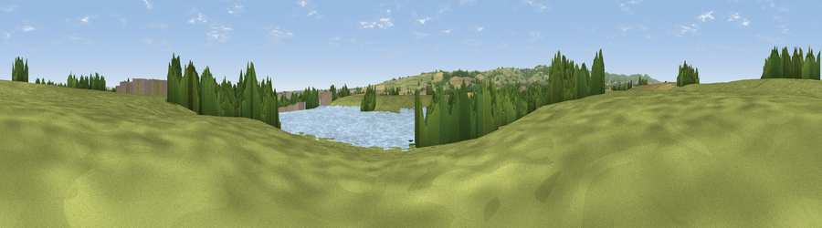

Viewpoint near Wembdon
#41116 in England · top 95% of its area beats it · near WembdonWhere it is
The exact computed spot (ST 27006 36576). Click the marker for map links.
The view, rendered

A 360° render of this exact spot computed from the terrain model, tree cover and land cover — summer colours, afternoon light, calibrated against photographs of famous viewpoints. Real trees, hedges and buildings will differ in detail.
The panorama
Grey silhouette: terrain skyline in each direction (720 bearings, Earth curvature and refraction included). Dashed green: skyline with trees (+15 m) and buildings (+8 m) as obstacles. Blue strip: how far the ground is visible on each bearing.
Where the view opens
Wedge length = distance to the farthest visible ground on that bearing (vegetation-aware). Rings at 10, 25 and 50 km.
What fills the view
41% water · 38% grassland · 13% woodland · 7% cropland · 2% built-up
Angular shares of the visible panorama (visual magnitude), not map area. Landscape diversity 0.54 (0–1 Shannon).
Key numbers
More beautiful places nearby
The staircase of upgrades: each row has a higher view potential than everything closer. Driving times are estimates from straight-line distance, calibrated against real road routing — check an actual route before setting out.
| Place | Direction | Drive | Score |
|---|---|---|---|
| Viewpoint near Enmore | SSW · 4 km | ~8 min | 73.2 |
| Horn Hill | NNW · 5 km | ~10 min | 74.6 |
| Viewpoint near Broomfield | SW · 5 km | ~11 min | 76.0 |
| Viewpoint near Enmore | W · 6 km | ~13 min | 77.6 |
| Cothelstone Hill | WSW · 9 km | ~17 min | 82.1 |
| Viewpoint near West Bagborough | WSW · 10 km | ~19 min | 84.3 |
| Wills Neck | W · 11 km | ~20 min | 85.7 |
| Viewpoint near Holford | WNW · 13 km | ~25 min | 85.9 |
51.12380, -3.04439 · source: osm viewpoint · position refined by local search. Computed location — check access rights before visiting.